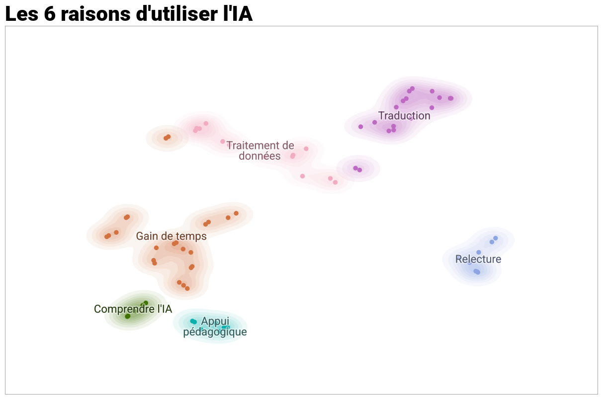

Profils des enquêtés#
Les pratiques de travail#
La première question interrogeant les pratiques de travail des enquêtés porte sur le lieu habituel de travail en classant par ordre de priorité les options suivantes :
“À mon domicile”
“Dans mon bureau sur site”
“Autre”
90% des personnes interrogés disent travailler le plus souvent à leur domicile (Table 11). C’est aussi le lieu le plus souvent cité en premier. 71% des répondants travaillent ainsi prioritairement à leur domicile. Tandis que le bureau est en moyenne classé deuxième dans l’ordre des priorités.
Parmis les autres lieux cités, on trouve tout d’abord les bibliothèques et les autres sites (CNRS, Campus Condorcet, partenaires de recherche). On note également que plusieurs répondants ont indiqué qu’ils travaillaient un peu partout, là où ils pouvaient faute de bureaux disponibles sur le campus.
“Où je peux, puisque nous n’avon pas de bureaux”
“bureau de collègues dans d’autres universités”
“Bureau MSH OU BIBLIOTHÈQUE MAIS JE MANQUE CRUELLEMENT D’UN ESPACE DE TRAVAIL”
“où je peux, je n’ai pas de bureau à la fac (15 m2 pour 6 titulaires)”
Ces réactions recoupent les résultats observés concernant les services à développer où la construction d’espace de travail avaient été choisi par plus de 80% des répondants (Fig. 8).
rang |
A mon domicile |
Dans mon bureau sur site |
Autre, précisez |
|---|---|---|---|
1 |
85 (71,4%) |
29 (24,4%) |
5 (4,2%) |
2 |
20 (16,8%) |
36 (20,3%) |
12 (10,1%) |
3 |
3 (2,5%) |
5 (4,2%) |
14 (11,8%) |
Total |
108 (90,8%) |
70 (58,8%) |
31 (26,1%) |
Les systèmes d’exploitation les plus répandus sont Apple et Windows. Seules 8 personnes utilisent Linux. En ce qui concerne les navigateurs, Firefox est le plus populaire. Il est cité par 52% des répondants. Chrome vient ensuite avec 23% des répondants qui l’utilisent.
q29_os_sys |
nb |
freq |
|---|---|---|
Apple |
53 |
44,5 |
ChromeOS |
4 |
3,4 |
Linux |
8 |
6,7 |
Windows |
54 |
45,4 |
Total |
119 |
100,0 |
Enfin, 68 répondants (soit 57%) disent avoir recourt à l’intelligence artificielle pour leurs recherches, dont 65% emploient des versions gratuites. La même proportion cite Chat GPT. Il est l’outil le plus utilisé. L’analyse de la question “pourquoi les utilisez-vous ?” à l’aide de l’algorithme de Topic modeling “BERTopic” [Grootendorst, n.d.] fait ressortir six motifs avancés par les personnes enquêtées pour expliquer leur utilisation de l’IA. Celui qui revient le plus souvent est le “gain de temps”, que ce soit pour rédiger des e-mails, effectuer des tâches administratives ou rechercher de l’information :
“Pour gagner du temps sur des procédures routinières ou pour formaliser des courriels ou autres plus rapidement”
“Pour gagner du temps dans la recherche informations”
Les deux autres principaux motifs sont l’aide à la traduction et le traitement des données à travers la retranscription d’entretiens avec Whisper ou l’édition de code informatique.
“relecture de l’anglais principalement”
M’aider à écrire du code de traitement de donnée principalement
analyse et visualisation des données
analyse d’entretiens, recherche dans de multiples entretiens
L’IA est enfin utilisée pour la relecture et la correction de texte, dans un contexte pédagogique, que ce soit pour préparer des cours ou contrôle son utilisation par les étudiants, ou pour comprendre ce que ces outils font.
Relectures, améliorations du manuscrit
Enseignement: Structuration de cours, élaboration de syllabus, idées d’activités pédagogiques
J’essaye de comprendre comment ils fonctionnent
Bien sûr, ces motifs peuvent apparaître au sein d’une même réponse. Par exemple, un des répondants a écrit : “NoScribe en local pour des transcriptions d’entretiens + deepl pour des traductions courtes et ponctuelles”.
Outils IA |
nb |
total |
freq |
|---|---|---|---|
chatgpt |
42 |
65 |
64,6 |
claude |
19 |
65 |
29,2 |
deepl |
7 |
65 |
10,8 |
gemini |
7 |
65 |
10,8 |
mistral |
6 |
65 |
9,2 |

Fig. 11 6 raisons d’utiliser l’IA#
gb_data =grouped_question(df0, "q36_gratuit_ou_payant", index = "q45_clé")
gb_data["total"]=68
gb_data["freq"]= gb_data.nb/gb_data.total*100
gb_data
| q36_gratuit_ou_payant | nb | total | freq | total_freq | |
|---|---|---|---|---|---|
| 0 | Gratuite | 44 | 68 | 64.705882 | 100.0 |
| 1 | Payante | 24 | 68 | 35.294118 | 100.0 |
df0.q37_raison_util_ia.nunique()
67
for n, x in enumerate(df0.q37_raison_util_ia):
print(df0.q45_clé.iloc[n], x)
PS8W-TJ9P nan
GNEG-5QXQ nan
FCCB-GMYA Pédagogie, Recherche (biblio)
CV3G-95CT relecture de l'anglais principalement
M5L8-UM9F aide ponctuelle formulation de traduction, aide ponctuelle réponses à des questions méthodologiques complexes
HT8V-PSKZ nan
AVQG-73T4 nan
R9R6-P7CN nan
9K9T-RVNL Principalement pour alléger ma charge de travail : rechercher des informations méthodologique ou statistiques, relire ma production en anglais, améliorer des formulations, rédiger des mails de réponse, rédiger des post professionnels pour les réseaux sociaux, etc.
CN6B-UEHQ Il s'agit de mon cœur de recherche.
639H-EH8R nan
5G5M-BM3L pour rester au courant des progrès et fonctionnalités
9JNL-L3RA nan
BKF8-SNEZ Automatisation de tâches réccurentes, créations de site web pour des supports pédagogiques personnalisés en ligne.
YTMC-B4DP transciption d'entretien
QLPJ-DVVQ nan
RXPG-46ZW nan
Q5AZ-855W analyse d'entretiens, recherche dans de multiples entretiens
QV7Q-KLNA nan
ZGPH-2FPH ça aide
TZYG-EKYM pratique
LPNF-H5YQ reformulation, recherche
ASQY-ZGVK nan
MXD6-JC3F pour des traductions, pour résumer des textes lus
SKD4-XJMH Automatisation de code, recherche méthodologique, copy-editing
YL4Q-KQAK Recherche d'information administrative, révision de texte en langue étrangère, recherche bibliographique exploratoire
5FJS-YCLW NoScibe fait ganer un peu de temps, Deeple pallie en partie mes lacunes... Pour les traductions longues je fais appel à des professionnel·les.
GK5N-J3SV Traduction, recherche, contrôle
RVX8-7FSV Pour de la recherche de documents ou de processus
EM6U-9PNF Pour m'aider à la conception d'exercices en cours, pour m'aider à faire des recherches web sur des sujets précis
E3YL-PHZV formidable gain de temps pour de nombreuses dimensions du travail universitaire
A2YY-FL32 nan
TSZM-D83G nan
PSFJ-S7YE nan
S3JS-37LL nan
35EN-C9DW Traduction
XGV3-TLNC nan
ET2V-ZA9Z traduction de certains termes scientifiques, rédaction de résumé
ANM4-SD9B Facilitation et correction
A33H-5ZS7 Principalement pour gagner du temps sur des tâches administratives (écriture de mails, certaines parties des dossiers AAP), parfois pour reformulerou générer des données fictives pour mes cours (cours de statistiques), rarement pour rechercher de la littérature scientifique
4VJV-R74Q Traduction ; retranscription entretiens
44RN-J48S nan
RAUZ-BRFQ M'aider à écrire du code de traitement de donnée principalement. Parfois à corriger les formulations de mes écrits
QH7Q-PJZ9 Correction orthographique/reformulation/epicenisation
PEG4-89LR nan
N99W-FKD9 nan
VR4Q-ZFTH traitement de données, sourcing
QVLJ-HWKA J'essaye de comprendre comment ils fonctionnent
CALH-8CSE Relectures, améliorations du manuscrit
8NR6-Q3ED Pour gagner du temps, synthétiser principalement
Y7ZW-AP6B deepL pour la traduction ; chat GPT ponctuellement pour des questions générales
XW7R-FDND Style/syntaxe à l'écrit, traduction anglais/français, recherche de références dans la littérature, assistance pour mise en page (bibliographie)
Q3YA-587D Evaluation des propositions de ces IA
9X9M-JRJW Traduction en anglais, synthèse de textes, rédaction en anglais, recherche de références
HE87-K3JL nan
PQML-4NVQ correction
H5X6-KL2Z Relecture, correction, extraction de données, analyse de documents
4FYP-H9TX Synthèse de texte (ChatGPT), analyse et visualisation des données (Claude)
7L5G-35JG pour gagner du temps dans la recherche d'informations ; pour des propositions de plans
FDGG-VDE6 Pratique
6454-S2QM travail données
D4JC-WN3B parceque je travaille sur les effets de IA
JF4U-H3UM Traduction
NLVG-2YZ5 principalement pour des aides à la programmation qui n'est pas mon coeur de métier - cela me permet de débugger rapidement un programme
WYVU-F8DF Recherche complémentaire d'informations, sourcing, appui méthodologique
Q5PB-ETLB nan
JYD7-6Y6B nan
NSK5-6STJ nan
SZY2-JZTU nan
5NUL-RKJ9 nan
QX8A-4JAQ nan
SYWH-2Y8T nan
DT4P-FHKY nan
GLRV-TMM9 nan
A3S4-MJGK nan
ZB5S-ABHN nan
KBVW-94Y2 nan
3LVR-PYLH gain de temps et de coût
SJWJ-3QKL nan
Z37Y-6JGC nan
VQH6-7NJP Comprendre et anticiper la façon dont les étudiants les utilisent
G35P-HV8F organisation: décomposition des tâches et des instructions; elicit pour la bibliographie
3EAA-2Q9U Enseignement: Structuration de cours, élaboration de syllabus, idées d'activités pédagogiques; Recherche: aide à la reformulation d'idées
LS4U-JEBR nan
2DRU-P3AV Ils sont utiles
SVRN-5BFD nan
TUUJ-9K9W nan
DBQD-JQTW nan
3V5K-8FEA Pour gagner du temps sur des procédures routinières ou pour formaliser des courriels ou autres plus rapidement
ZBFK-V8BA nan
GYQJ-9DVE nan
L755-EYSR Recherche sur les interactions Humain-IA, selon l'expertise.
QYE4-8EYZ nan
FRLS-PTRU Ca peut être utile !
XA8V-2558 nan
7CU7-JG8K transcription, résumés d'articles, aide technique, transcription
LXKU-XDYA nan
572G-RBZC nan
BNVM-K8M9 reformulaiton de texte et generation de code
2QNC-8AAQ nan
78P8-N4BA Assistance à la rédaction, revue de littérature
QAMR-B8EH Reconnaissance automatique de caractères
VTX9-R7JQ nan
2Y89-7BR9 je les teste pour les divers usages de mon travail : recherche d'information, rédaction, traduction.
A7R6-3SWC pour relire et corriger l'anglais. pour organiser des données verbales en catégories,
2JQN-P9PA Accès via CNRS
H8B2-2AYQ nan
82N2-HDNU Faire des calculs, une recherche rapide, vérifiez la qualité rédactionelle d'un texte...
X48K-M3K4 Transcription d'entretien, aide à la rédaction, aide à la réflexion, recherche documentaire...
RZY3-LPES Gagner du temps +++
M47N-T9DZ nan
Q934-QKAW traduction, amélioration de l'écriture, reformulation, organisation et planification.
HKN6-95PQ Beaucoup plus rapide et plus précise que Scopus, mais trop cher
5V62-N439 traduction
MLSN-NBUS nan
WAR9-LFJP Revision de l'anglais écrit/traduction et analyse de certains textes
HRZG-6JGE nan
32TW-JLY5 Fautes d'orthographe non vues lors des relectures
6GVE-N5NJ nan